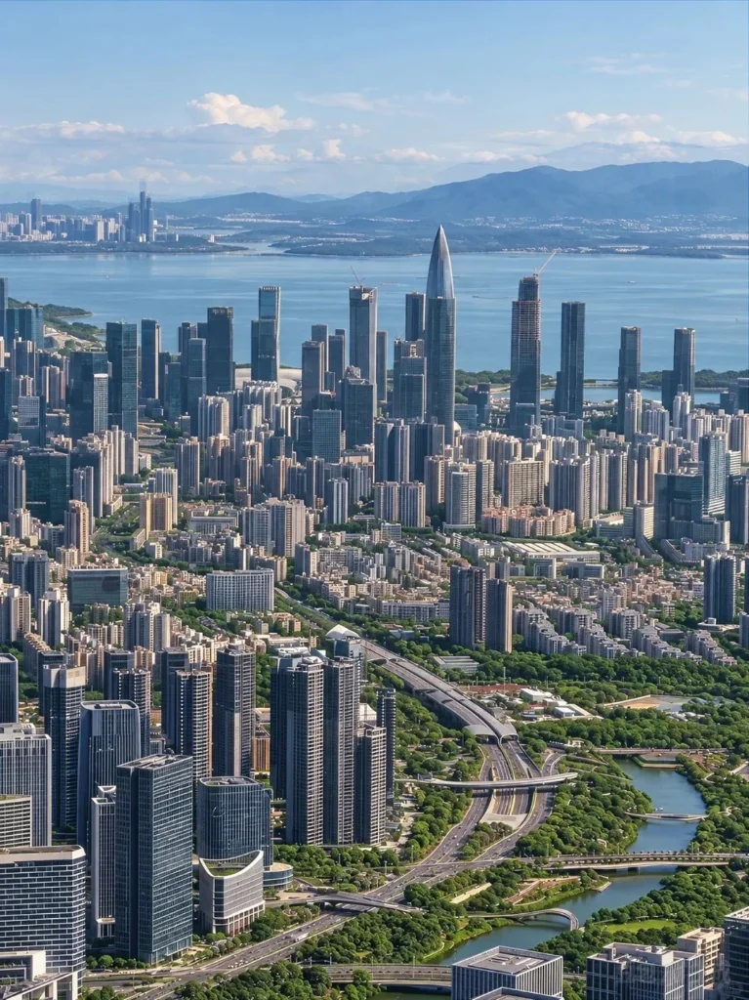

SHENZHEN / GUANGDONG
Shenzhen 深圳
Busy streets, with quiet places nearby.
Shenzhen is my hometown. It's a young city with a fast pace, and people take their time seriously. But I can always find somewhere to relax — Dameisha Beach for the sea, Wutong Mountain for a hike, or OH Bay for the evening lights.
My favorite part: Mountains, beaches and city views all in one place.
Food I'd recommend: Yum cha (dim sum) and siu mei (Cantonese roast meats).